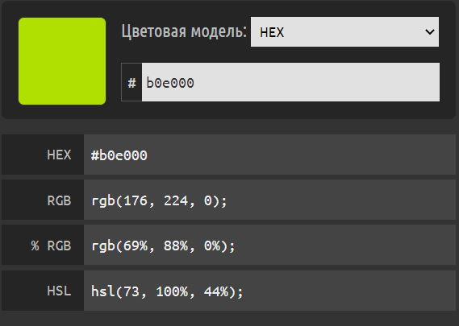
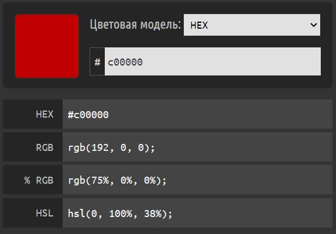

Чтобы разобраться, каким образом случайные названия интерпретируются браузерами в цвета, рассмотрим следующий АЛГОРИТМ:
Например, преобразуем <font color = "#BruceWillis">.
Вот как выглядит этот цвет:
Давайте преобразуем другое название в цвет, например <font color = "#chucknorri">.
Вот как выглядит этот цвет:
Безопасная палитра цветов – это общепринятый стандарт для web-дизайнеров. Существует множество платформ и еще большее количество браузеров для этих платформ и все они воспринимают цвета по-разному. Для того, чтобы передать пользователям правильный цвет была составленная таблица цветов, которые ввиду особенности их цветового кода отображаются одинаково правильно на всех платформах и во всех браузерах.
Палитра насчитывает 216 цветов, которые не должны искажаться ни в одном браузере. По крайней мере, так должно быть, и производители браузеров обязаны это гарантировать.
Цвет для браузера, равно как и для компьютера это код, так же как и все остальные данные. Существует две наиболее популярные кодировки записи цвета – HEX-код цвета и RGD кодировка. HEX-код – это представление цвета в виде шестизначного шифра записываемого с помощью шестнадцатеричной кодировки. RGB – RedGreenBlue, то есть представление цвета соотношением содержащихся в нем трех основных цветов, записывается каждый цвет кодом цифровым кодом от 0 до 255, цвета разделяются между собой точкой.
Если ваша картинка содержит цвета только из безопасной палитры, то изображение будет без цветового искажения показано и на 256-цветных мониторах. Если это не так, браузер на таких мониторах начнет приближать отсутствующие цвета по одному ему известному алгоритму, и результат будет непредсказуемым, а, значит, заведомо плохим.
Безопасная палитра встраивается во многие графические редакторы (в Фотошопе она называется Web-палитрой).
Можно выбирать цвета безопасной палитры и вручную, пользуясь простыми правилами ее построения:
216 цветов безопасной палитры получаются комбинацией составляющих, каждая из которых может принимать только следующие шестнадцатеричные значения: 00, 33, 66, 99, CC, FF (или 0, 51, 102, 153, 204, 255 в десятичной системе счисления).
Таблицу Безопасных цветов можно просмотреть, пройдя по ссылке ниже!
Безопасная палитраПримечание: цвета в данном разделе взяты из безопасной палитры!